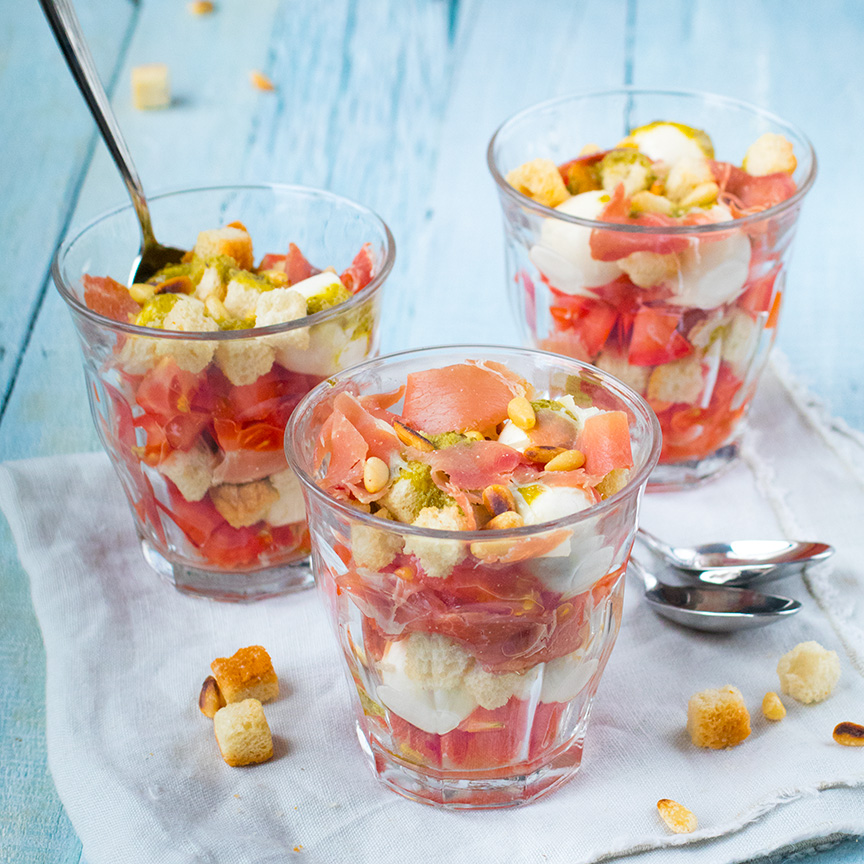

Italiaans voorgerecht in een glaasje
Dit voorgerecht met tomaat, mozzarella en rauwe ham is past perfect bij een Italiaans diner
Ingrediënten
- 3 tomaten
- 1 zakje mini mozzarella
- Handje pijnboompitten
- 4 plakken parmaham
- Handje croutons
- 2 eetlepels groene pesto
Bereidingswijze
- Snijd de tomaten klein. Snijd of scheur ook de plakken serranoham in kleinere stukken.
- Rooster de pijnboompitten in een droge pan.
- Meng de pesto in een kommetje met een scheutje water om het te verdunnen tot een dressing.

Tip:Maak het voorgerecht af met wat geroosterde pijnboompitjes.